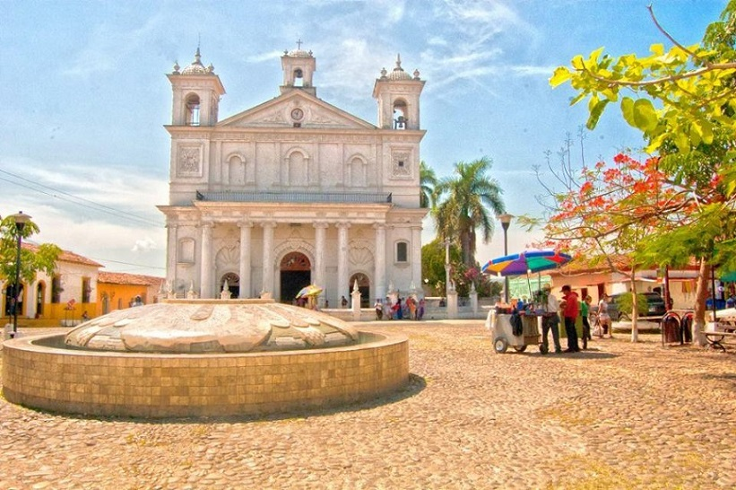
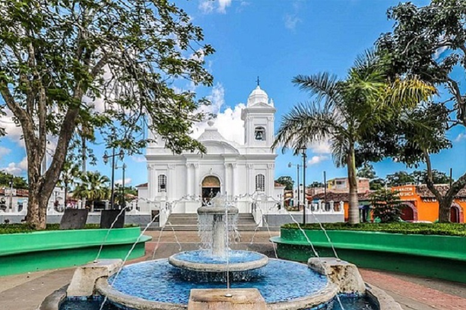
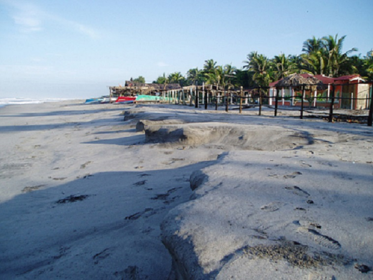

Pueblos Vivos
Playas
Bosques
Compartir
Alegria, Usulután
Suchitoto, Cuscatlán

Concepción de Ataco, Ahuchapán
Ilobasco, Cabañas

Apaneca, Ahuchapán
Playa El Espino, Usulután
Playa El Tunco, La Libertad
Playa El Zonte, La Libertad
Playa Los Cobanos, Sonsonate
Playa Metalío, Sonsonate

Parque Nacional El Boquerón, San Salvador
Parque Nacional El Imposible, Ahuchapán
El Pital, Chalatenango
Jardín Botánico La Laguna, La Libertad